長期トレンド
JKMとJEPXシステムプライスの推移グラフ
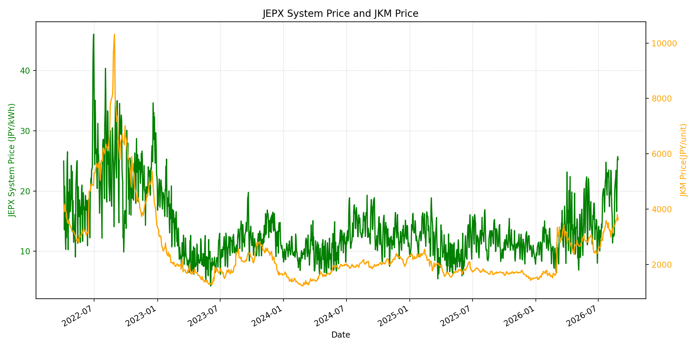
WTIの推移グラフ
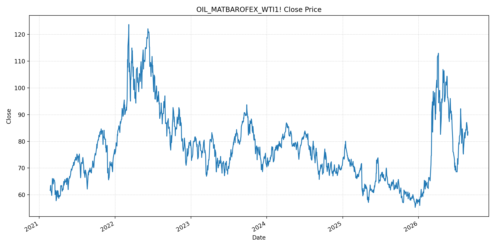
JEPXエリアプライスグラフ（直近一年分）
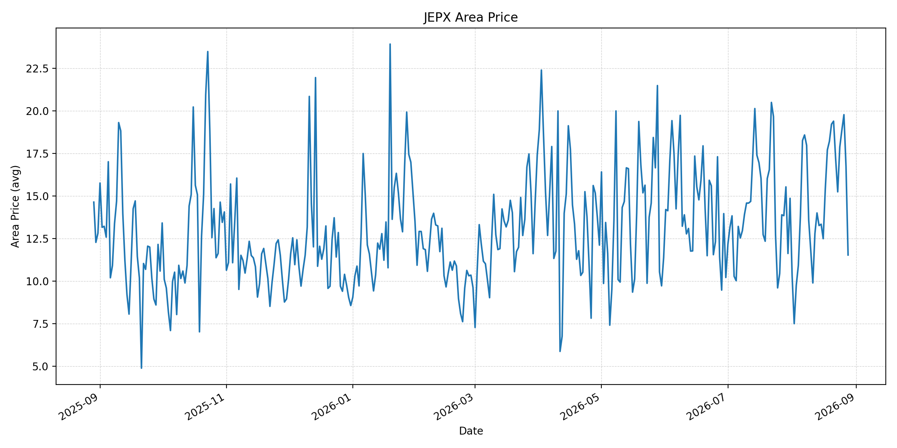
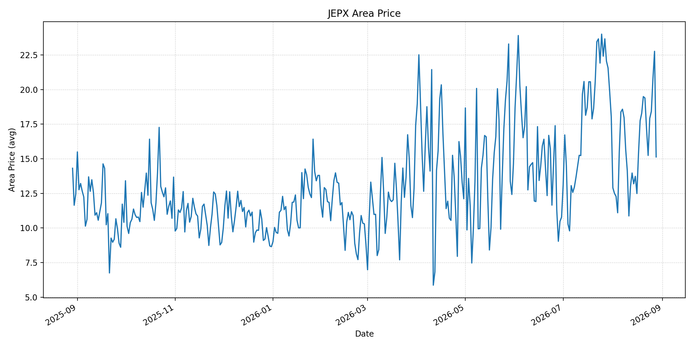
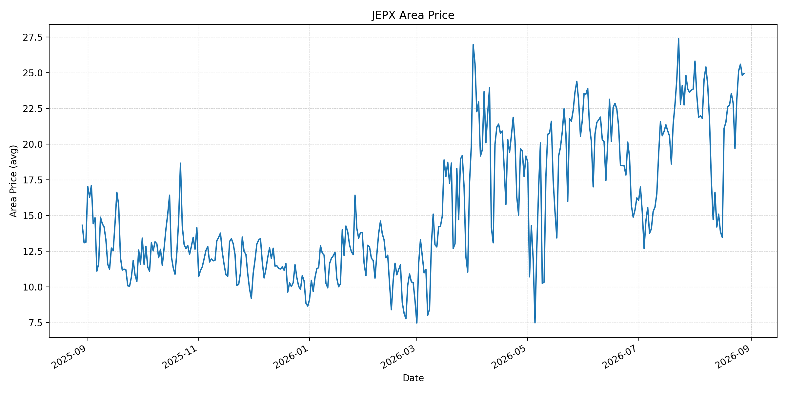
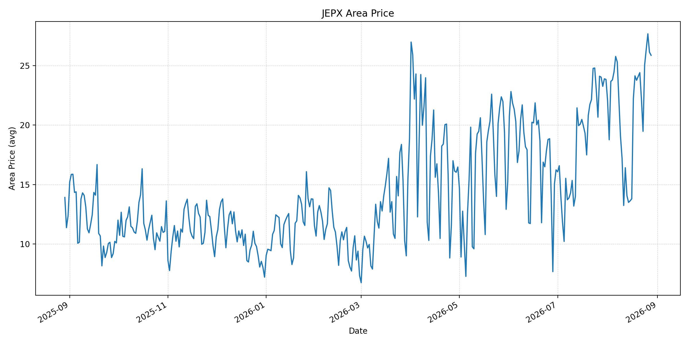
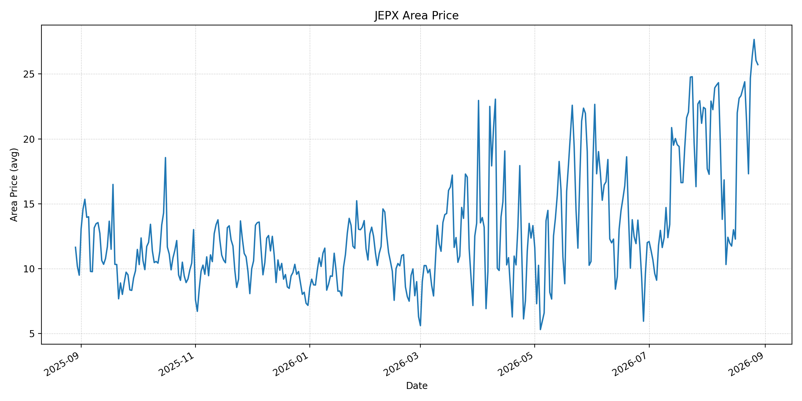
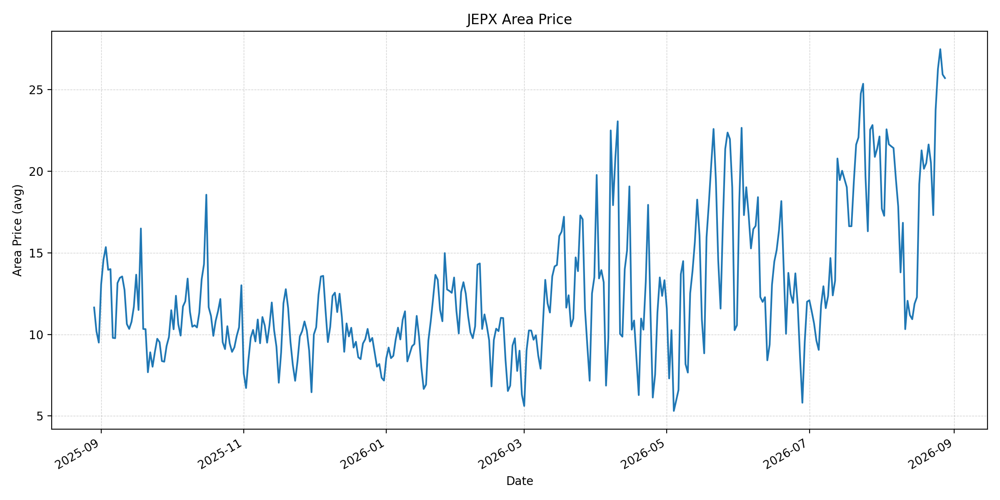
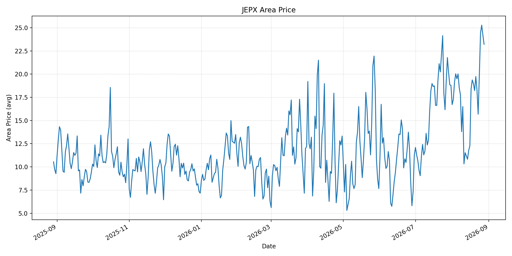
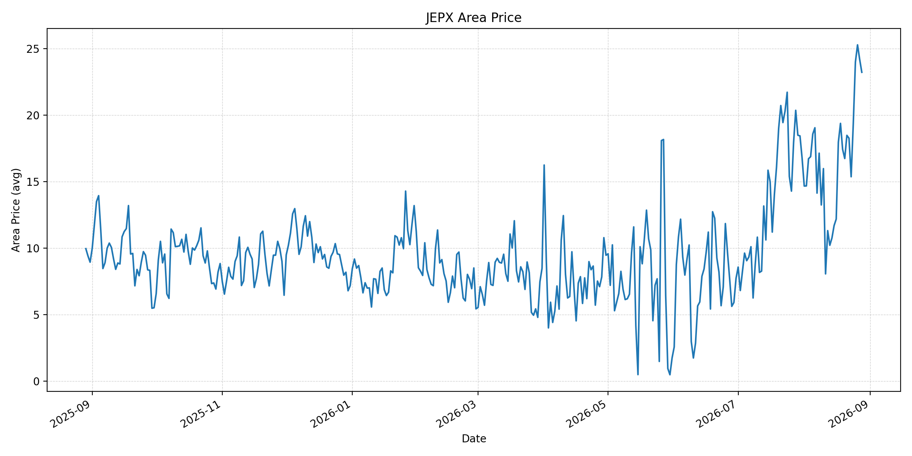
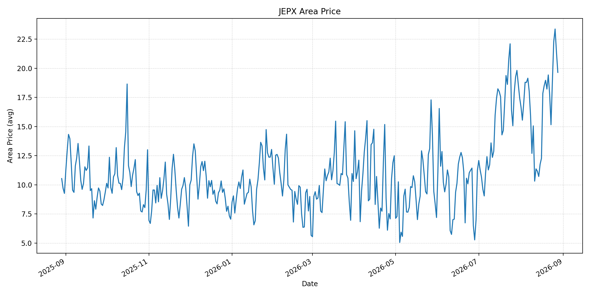
短期トレンド
JKMとJEPXシステムプライスの推移グラフ
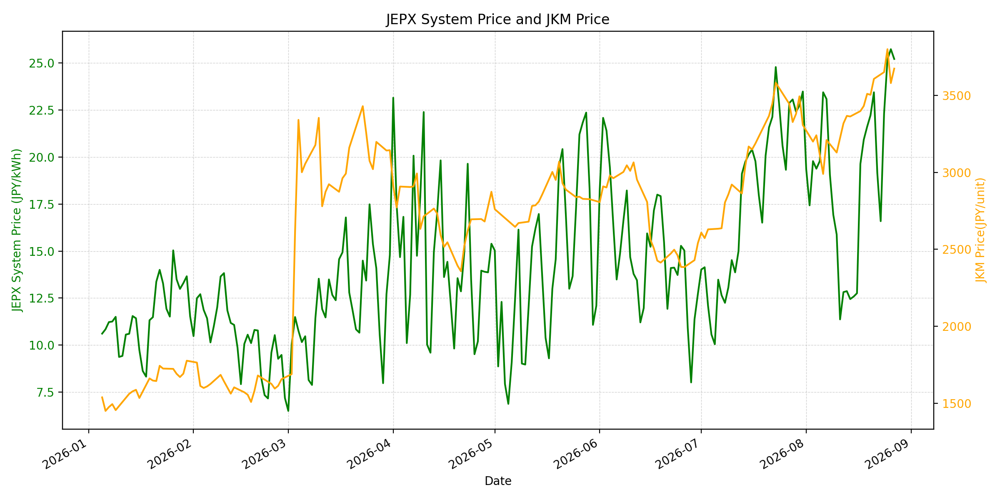
WTIの推移グラフ
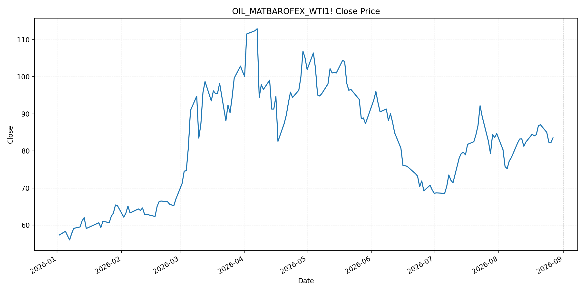
JEPXシステムプライス
最新値は 2026-08-28 分、先週終値は 2026-08-21、先月終値は 2026-07-31 時点の直近値です。
| エリア | 当日 | 前日 | 前日比 | 先週 | 先週比 | 先月 | 先月比 | 最高 | 最高値比 |
|---|---|---|---|---|---|---|---|---|---|
| システム | 24.27 | 25.21 | -3.73 | 23.44 | 3.54 | 23.48 | 3.36 | 64.06 | -62.12 |
| 北海道 | 11.53 | 16.74 | -31.12 | 19.39 | -40.54 | 14.86 | -22.41 | 73.92 | -84.40 |
| 東北 | 15.13 | 22.76 | -33.52 | 19.39 | -21.97 | 18.04 | -16.13 | 84.92 | -82.18 |
| 東京 | 24.94 | 24.81 | 0.52 | 23.55 | 5.90 | 23.85 | 4.57 | 86.13 | -71.04 |
| 中部 | 25.86 | 26.12 | -1.00 | 24.40 | 5.98 | 23.83 | 8.52 | 52.06 | -50.33 |
| 北陸 | 25.72 | 26.05 | -1.27 | 24.40 | 5.41 | 22.32 | 15.23 | 46.48 | -44.67 |
| 関西 | 25.71 | 25.93 | -0.85 | 21.64 | 18.81 | 22.13 | 16.18 | 46.48 | -44.69 |
| 中国 | 23.21 | 24.18 | -4.01 | 19.73 | 17.64 | 18.78 | 23.59 | 46.48 | -50.07 |
| 四国 | 23.21 | 24.18 | -4.01 | 18.47 | 25.66 | 16.74 | 38.65 | 46.48 | -50.07 |
| 九州 | 19.65 | 21.39 | -8.13 | 19.43 | 1.13 | 17.46 | 12.54 | 40.54 | -51.53 |
LNG先物価格
最新値は 2026-08-27 の LNG(close) です。
| 当日 | 前日 | 前日比 | 先週 | 先週比 | 先月 | 先月比 | 最高 | 最高値比 |
|---|---|---|---|---|---|---|---|---|
| 3674.00 | 3580.00 | 2.63 | 3504.00 | 4.85 | 3307.00 | 11.10 | 10319.00 | -64.40 |
石油先物価格
最新値は 2026-08-27 の OIL(close) です。
| 当日 | 前日 | 前日比 | 先週 | 先週比 | 先月 | 先月比 | 最高 | 最高値比 |
|---|---|---|---|---|---|---|---|---|
| 83.53 | 82.23 | 1.58 | 86.83 | -3.80 | 84.67 | -1.35 | 123.70 | -32.47 |
ニュース
イラン情勢に関するニュース
- カタールなど地域諸国が戦争の出口を模索する一方、イランは米国の新制裁を退けています。参照: AP, 2026-08-27
- ホルムズ海峡は米国の対イラン政策の中心課題となっており、外交・安全保障の不確実性が続きます。参照: AP, 2026-08-27
ホルムズ海峡経由の石油・LNGに関するニュース
- 海峡で新たなタンカー攻撃が報じられ、商業船の安全リスクが継続しています。参照: AP, 2026-08-27
- Kplerでは週末の通航が土曜5隻、日曜0隻で、前週末の31隻を下回りました。参照: Reuters, 2026-08-27
ホルムズ海峡経由でない石油・LNGに関するニュース
- 過去24時間で、ホルムズ以外のLNG供給量を直接変更する主要な新規公表は確認できませんでした。
- 日本は中東パイプライン支援と調達多様化を含む供給強靭化策を進めています。参照: Reuters, 2026-08-26
日本国内のイラン戦争に関係するニュース
- 過去24時間で、JEPX制度または国内電力需給ルールを直接変更する主要な新規公表は確認できませんでした。
- 政府は、ホルムズ迂回パイプライン支援を含むエネルギー供給の強靭化策を示しています。参照: Reuters, 2026-08-26
インサイト
ニュース事項による日本の電力市場への影響（短期：数日〜1週間）
- JEPXシステムは 24.27 円/kWhで前日比 -3.73%、先週比 3.54% です。東京 24.94 円/kWh、中部 25.86 円/kWh、関西 25.71 円/kWhは高水準です。
- LNGは 3674.00 で先週比 4.85%、WTIは 83.53 ドルで -3.80% です。通航減少とタンカー攻撃は燃料リスクプレミアムを支える要因です。
- 短期では、地域外交の進展と海峡の実通航量、安全事案が燃料費とJEPXの方向を左右します。
ニュース事項による日本の電力市場への影響（長期：1ヶ月〜半年）
- JEPXシステムは先月比 3.36%、LNGは 11.10%、WTIは -1.35% です。LNG高が持続すれば火力限界費用へ波及する可能性があります。
- 四国は先月比 38.65%、中国 23.59%、関西 16.18% と上昇しています。燃料市況とエリア別需給を併せて確認する必要があります。
- 過去最高値比ではシステム -62.12%、LNG -64.40%、WTI -32.47% です。迂回インフラと調達多様化の実効性、海峡の安全な通航回復を分けて監視することが重要です。